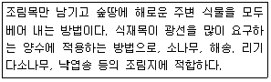

산림기능사 (2009-01-18 기출문제)
1과목: 조림 및 육림기술
1. 작업종 중 비교적 짧은 갱신기간 중에 몇 차례의 갱신벌채로서 모든 나무를 제거, 이용하는 동시에 그곳에 새로운 임분이 나타내게 하는 작업은?
- 개벌작업
- 모수작업
- 산벌작업
- 택벌작업
(정답률: 64%)

2. 택벌 작업 시 벌채하지 말아야 하는 나무는?
- 피압목
- 병해목
- 어미나무(母樹)
- 원하지 않는 종류의 나무
(정답률: 86%)
3. 묘목식재와 관련된 설명 중 틀린 것은?
- 묘목의 굴취 시기는 식재하기 전 봄이다.
- 묘목의 굴취는 비오는 날에 하면 좋다.
- 캐낸 묘목의 건조를 막기 위하여 축축한 거적으로 덮는다.
- 굴취 시 땅에 너무 습기가 많을 때에는 어느 정도 마른 다음에 굴취한다.
(정답률: 94%)
4. 벌구형태 크기에 따라 개벌작업을 구분할 때 소면적 개벌의 일반적이 갱신대상지 면적은 얼마인가?
- 1ha 미만
- 1ha 또는 1~5ha
- 5ha 이상
- 50ha 이상
(정답률: 56%)
5. 벌구(伐區) 위에 서 있는 임목 전부(경우에 따라서는 대부분)를 일시에 벌채하는 채벌종은?
- 개벌
- 벌구
- 택벌
- 모수작업
(정답률: 88%)
6. 맹아력이 강한 활엽수종은 여름철에 지상 1m 정도의 높이에서 줄기를 꺾어 누여 두면 뿌리목 부근에서 절단한 것 보다 맹아의 힘을 누를 수 있다. 무슨 작업의 설명인가?
- 풀베기
- 덩굴치기
- 제벌
- 간벌
(정답률: 62%)
7. 일찍부터 수확을 올리고 남은 임목에 충분한 공간을 주어 우세목으로 만드는데 그 목적이 있고 1급목이 주 간벌 대상이 되는 간벌방식은?
- 택벌식 간벌
- 기계적 간벌
- 하층 간벌
- 수관 간벌
(정답률: 71%)
8. 개벌작업의 장점이 아닌 것은?
- 성숙한 나무로 된 임분에 적당하다.
- 숲땅이 항상 나무로 덮여 있어 보호를 받고, 겉흙이 유실되지 않는다.
- 벌채 작업이 일정한 면적에 집중되어 있다.
- 수종을 변경하고자 할 때 좋은 방법이다.
(정답률: 75%)
9. 리기다소나무 1년생 묘목의 곤포당 본수는?
- 1000
- 2000
- 3000
- 4000
(정답률: 61%)
10. 비료목으로 취급되는 나무 중 콩과식물에 속하지 않는 것은?
- 아카시아나무
- 보리수나무
- 자귀나무
- 싸리나무
(정답률: 55%)
11. 봄에 묘목을 가식할 때 묘목의 끝은 어느 방향으로 향하게 묻는가?
- 동쪽
- 서쪽
- 남쪽
- 북쪽
(정답률: 86%)
12. 다음 수종 중 측면맹아력이 가장 강한 수종은?
- 잣나무
- 아카시아나무
- 낙엽송
- 소나무
(정답률: 78%)
13. 삽목에 따른 발근이 잘되어 조림용으로 사용하기 용이한 수종은?
- 소나무
- 개나리
- 상수리나무
- 밤나무
(정답률: 72%)
14. 다음은 무엇을 설명한 것인가?

- 둘레 깎기
- 전면 깎기
- 줄 깎기
- 줄 깎기와 전면 깎기
(정답률: 81%)
15. 연료림 작업에 가장 적합한 작업종은?
- 개벌작업
- 산벌 작업
- 중림 작업
- 왜림 작업
(정답률: 85%)
16. 산벌 작업과 관계없는 작업은?
- 예비벌
- 하종벌
- 후벌
- 초벌
(정답률: 92%)
17. 조림 수종의 선택 요건에 대한 설명으로 틀린 것은?
- 원줄기가 곧고 길 것
- 병충해에 대하여 저항력이 강할 것
- 경제성은 떨어지나 수요량은 많을 것
- 씨앗의 확보, 양묘, 식재 후 관리가 쉬운 수종일 것
(정답률: 85%)
18. 조림할 땅에 종자를 직접 뿌려 조림하는 것은?
- 식수조림
- 파종조림
- 삽목조림
- 취목조림
(정답률: 92%)
19. 열간거리 2.0m, 묘간거리 2.0m로 묘목을 심고자 한다. 1ha에 몇 그루가 필요한가?
- 1000
- 2500
- 3000
- 4500
(정답률: 85%)
20. 산림 토양 중 낙엽층으로 떨어진 낙엽이 원형대로 쌓여 있는 곳은 무슨 층인가?
- 표토층
- 유기물층
- 심토층
- 모재층
(정답률: 87%)
21. 조림목을 감고 올라가서 피해를 주는 각종 덩굴식물을 제거하는 시기로 가장 적합한 설명은?
- 이른 봄 춘삼월에 일찍이 제거해야 된다.
- 뿌리 속에 양분저장이 끝난 늦가을이 좋다.
- 덩굴이 무성하기 전인 5~6월경이 좋다.
- 낙엽이 진 후인 10~11월경이 좋다.
(정답률: 74%)
22. 호두나무의 경우 접목을 실시한 후 캘러스(callus) 조직 형성에 필요한 적정 온도의 범위는?
- 5~10 도
- 10~20 도
- 25~30도
- 35~40도
(정답률: 44%)
23. 나무의 어린뿌리와 공생을 하는 균근으로 주로 토양미생물 중에 외생 균근을 형성하는 수종은?
- 소나무
- 동백나무
- 단풍나무
- 오리나무
(정답률: 54%)
24. 씨앗을 건조할 때 음지에 건조해야 하는 종은?
- 소나무
- 밤나무
- 전나무
- 낙엽송
(정답률: 73%)
25. 삽수의 발근에 관한 설명으로 바르지 않는 것은?
- 어미나무의 영양상태가 좋고 질소의 함량이 탄수화물의 함량보다 많을 때 발근율이 높아진다.
- 주로 어린나무에서 딴 삽수가 늙은 나무에서 채취한 삽수보다 발근이 잘된다.
- 낙엽 활엽수는 대부분 가지의 윗부분에서 얻은 삽수가 발근이 잘된다.
- 침엽수류는 발근 초기에 햇볕을 충분히 받도록 하고 새잎이 나오기 시작하면 차광을 하여 준다
(정답률: 53%)
2과목: 산림보호
26. 해충의 월동 상태를 표시한 것 중 옳지 않은 것은?
- 천막벌레나방 : 알
- 어스렝이나방 : 번데기
- 매미나방 : 알
- 미국흰불나방 : 번데기
(정답률: 73%)
27. 포풀러 잎녹병의 중간기주는?
- 오동나무
- 오리나무
- 낙엽송
- 졸참나무
(정답률: 70%)
28. 솔나방의 방제방법으로 틀린 것은?
- 4월 중순~6월 중순과 9월 상순~10월 하순에 유충이 솔잎을 가해할 때 약제를 살포한다.
- 6월 하순부터 7월 중순 고치속의 번데기를 집게로 따서 소각한다.
- 솔나방의 기생성 천적이 발생할 수 있도록 가급적 단순림을 조성한다.
- 볏짚, 가마니 또는 거적으로 잠복소를 설치한다.
(정답률: 75%)
29. 담배장님노린재에 의하여 매개 전염되는 수병은?
- 포플러모자이크병
- 오동나무빗자루병
- 잣나무 털녹병
- 소나무 잎녹병
(정답률: 72%)
30. 측백나무, 편백나무, 나한백 등에 흔히 발생하여 치명적 피해를 주는 해충은?
- 향나무하늘소
- 밤색우단풍뎅이
- 포도유리나방
- 버들바구미
(정답률: 78%)
31. 밤 열매에 피해를 주며 1년에 2~3회 발생하고 성충 최성기에 접촉성 살충제로 방제하면 효과가 큰 해충은?
- 복숭아명나방
- 밤나무혹벌
- 밤애기잎말이나방
- 밤바구미
(정답률: 70%)
32. 볕데기(皮燒)의 피해를 가장 덜 받는 수종은?
- 오동나무
- 후박나무
- 굴참나무
- 가문비나무
(정답률: 61%)
33. 소나무류의 천공성 해충은?
- 소나무좀
- 소나무왕진딧물
- 솔껍질깍지벌레
- 잣나무넓적잎벌
(정답률: 70%)
34. 밤나무 줄기마름병과 관련된 설명으로 틀린 것은?
- 밤나무줄기마름병은 잣나무털녹병, 느릅나무시들음병과 더불어 20세기의 3대 수목병해였다.
- 병환부의 수피가 처음에는 황갈색 내지 적갈색으로 변하다.
- 밤나무줄기마름병은 서양의 풍토병으로 미국과 유럽의 밤나무림을 황폐화시켰다.
- 병원균은 병환부에서 균사 또는 포자의 형으로 월동한다.
(정답률: 61%)
35. 수목병원균의 전염원이 아니 것은?
- 바이러스
- 새
- 기생식물의 종자
- 포자
(정답률: 65%)
36. 수목 뿌리혹병의 병원체와 전염방법을 가장 바르게 설명한 것은?
- 병원체는 파이토플라스마이며, 마름무늬매미충이 전염시킨다.
- 병원체는 바이러스이며, 병든 나무에서 종자를 채취하여 번식할 때 전염된다.
- 병원체는 세균이며, 접목 시 감염이 잘되며, 상처를 통하여 침입이 된다.
- 병원체가 진균류이며, 중간기주인 송이풀로 기주 전환을 한다.
(정답률: 69%)
37. 식물에 직접적인 피해를 주는 기생성 종자식물이 아닌 것은?
- 겨우살이
- 새삼
- 오리나무더부살이
- 일일초
(정답률: 64%)
38. 주제를 용액에 녹이고 거기에 유화제를 첨가하여 물과 섞이도록 한 약제는 무엇인가?
- 용액
- 유제
- 수화제
- 분제
(정답률: 83%)
39. 제초제의 작용기작이 아닌 것은?
- 광합성 저해
- 호르몬작용의 교란
- 세포분열 저해
- 에너지생성 촉진
(정답률: 83%)
40. 대기오염에 내성이 가장 강한 수종끼리 묶어져 있는 것은?
- 해송, 개나리
- 사철나무, 은행나무
- 소나무, 녹나무
- 붉가시나무, 층층나무
(정답률: 87%)
3과목: 임업기계일반
41. 체인톱 에어휠터(공기청정기)의 정비 방법으로 적합한 것은?
- 매일 작업 중 또는 작업 후에 손질
- 2~3일 사용 후 한 번씩 손질
- 1주간사용 후 손질
- 1개월간 사용 후 손질
(정답률: 85%)
42. 체인톱과 예불기 등 2행정 기관의 연료로 적합한 것은?
- 가솔린과 경유
- 가솔린과 오일 혼합류
- 경유와 오일
- 가솔린과 석유 혼합유
(정답률: 90%)
43. 벌목 작업 시 작업로 간격(최소 안전작업 거리) 기준으로 적당한 것은?
- 벌도될 나무 높이의 1배
- 벌도될 나무 높이의 2배
- 벌도될 나무 높이의 3배
- 벌도될 나무 높이의 4배
(정답률: 88%)
44. 2행정 싸이클 기관에 포함되어 있는 구조로 4행정 기관에는 없는 명칭은?
- 소기공
- 오일판
- 배브
- 푸시로드
(정답률: 83%)
45. 예불기의 연료는 시간당 약 몇 L가 소모되는 것으로 보고 준비하는 것이 좋은가?
- 0.5
- 1
- 2
- 3
(정답률: 88%)
46. 4행정 싸이클 기관의 작동순서로서 맞는 것은?
- 흡입 → 압축 → 배기 → 폭발
- 흡입 → 폭발 → 배기 → 압축
- 흡입 → 배기 → 압축 → 폭발
- 흡입 → 압축 → 폭발 → 배기
(정답률: 85%)
47. 예불기의 기어케이스에 #90~120 기어오일을 주유할 때 약 몇 cc 정도가 가장 적당한가?
- 5~10
- 10~15
- 20~25
- 30~35
(정답률: 47%)
48. 혼합연료에 오일의 함유비가 높을 경우 나타나는 현상으로 틀린 것은?
- 연료의 연소가 불충분하여 매연이 증가한다.
- 스파크플러그에 오일이 덮게 된다.
- 오일이 연소실에 쌓인다.
- 엔진을 마모시킨다.
(정답률: 75%)
49. 벌목도구의 사용법을 설명한 것으로 틀린 것은?
- 목재돌림대는 벌목 중 나무에 걸려있는 벌도목과 땅 위에 있는 벌도목의 방향전환 및 돌리는 작업에 주로 사용된다.
- 지렛대와 밀게는 밀집된 간벌지에서 벌도 방향 유인과 잘린나무 방향전환에 유용하게 사용된다.
- 쐐기는 톱의 끼임을 방지하기 위하여 사용한다.
- 스웨디쉬 갈고리는 기울어진 나무의 방향 전환에 주로 사용되는 방향 갈고리이다.
(정답률: 68%)
50. 체인톱의 안전 사용에 대한 설명으로 틀린 것은?
- 안전작업에 필요한 각종장비를 반드시 착용한다.
- 절단 작업 시는 충분히 스로틀레버를 잡아 가속한 후 사용한다.
- 위험한 부분은 반드시 안내판 코로 찔러 베기를 한다.
- 기계 작업 전이나 작업 중 음주는 시각, 감각, 판단상의 장애를 일으킨다.
(정답률: 89%)
51. 어깨걸이식 예불기를 메고 손을 떼었을 때 지상으로부터 날까지의 가장 적절한 높이는 몇 ㎝ 정도인가?
- 5~10
- 10~20
- 20~30
- 30~40
(정답률: 81%)
52. 체인톱니 3개의 리벳 간의 간격이 16.5㎜일 때, 톱니의 피치는 몇 인치(")인가?
- 0.404
- 3/8
- 0.325
- 1/4
(정답률: 65%)
53. 예불기 작업 방법으로 가장 올바른 것은?
- 소경재를 절단할 때는 수평으로 절단한다.
- 경사면에서의 작업할 때는 100m~200m로 구분하여 작업한다.
- 초년생 관목베기의 작업폭은 1.5m가 적당하다.
- 항상 왼발을 앞으로 하고 전진할 때는 오른발을 앞으로 이동시킨다.
(정답률: 45%)
54. 벌목작업 도구가 아닌 것은?
- 지렛대
- 밀게
- 사피
- 양날괭이
(정답률: 83%)
55. 체인톱의 주간정비 사항으로만 조합된 것은?
- 스파크플러그 청소 및 간극 조정
- 기화기 연료막 점검 및 엔진오일 펌프 청소
- 유압밸브 및 호스 점검
- 연료통 및 여과기 청소
(정답률: 66%)
56. 무육톱의 삼각톱날 꼭지각은 몇 도(℃)로 정비 하여야 하나?
- 25도
- 28도
- 35도
- 38도
(정답률: 63%)
57. 기계톱의 각 부분별 기능 중 목재의 절삭 두께를 결정하는 것은?
- 톱날의 지붕각
- 깊이제한부
- 전동쇠
- 톱날의 가슴각
(정답률: 84%)
58. 소경재 임분작업을 하려고 이리톱의 톱날갈기를 할 때 가장 적당한 가슴각은 얼마인가?
- 침엽수는 60도 활엽수는 60도이다.
- 침엽수는 60도 활엽수는 70도이다.
- 침엽수는 70도 활엽수는 70도이다.
- 침엽수는 70도 활엽수는 60도이다
(정답률: 74%)
59. 벌목작업 시 벌도목의 가지치기용 도끼날의 각도로 다음 중 가장 적합한 것은?
- 3~5 도
- 8~10 도
- 30~35 도
- 36~40 도
(정답률: 67%)
60. 일반적인 소형동력윈치의 용도가 아닌 것은?
- 임도 지장목의 집재 작업
- 삭도 및 집재기 설치 보조 작업
- 주 벌재 집재작업
- 수라 운반설치작업
(정답률: 52%)